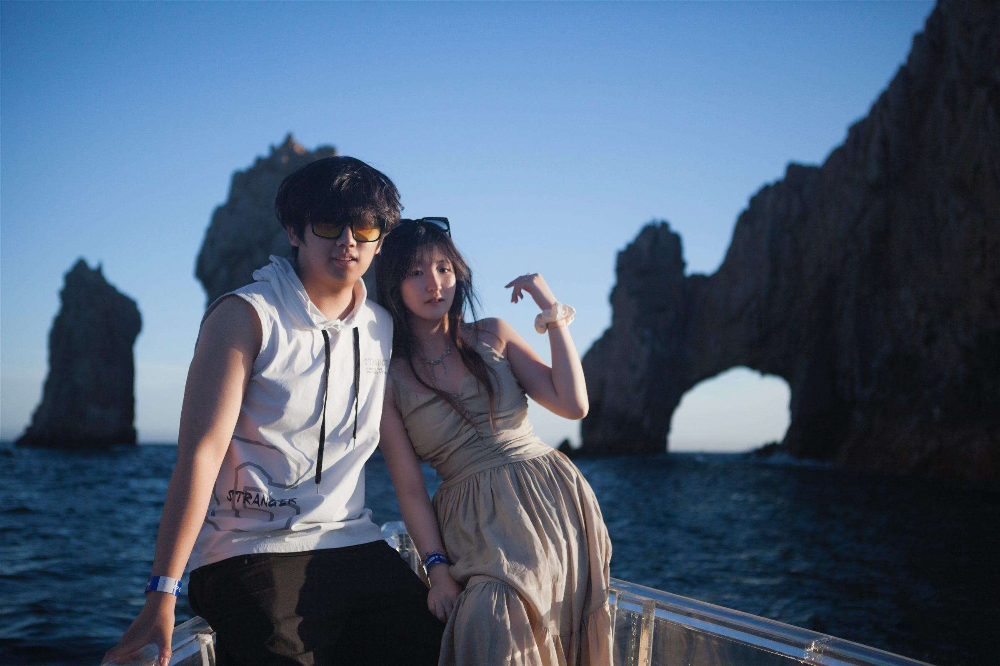

Gallery
Selected Photos


Mexico
A quiet escape of ocean breeze, boat rides, and slow luxury by the sea.
Travel Notes
During my junior year of college, we escaped to Los Cabos for a spontaneous weekend retreat, leaving behind the deadlines and pressure of campus life for a few sunlit days. We skipped a few classes—well, to be accurate, only Cici did—and embraced the slower rhythm of the coast with boat rides across clear waters, a luxurious hotel stay, and exceptionally fresh seafood by the sea. It was an elegant, carefree getaway, and exactly the kind of recharge we needed in the middle of a demanding year.
Gallery
